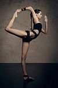
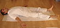
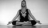
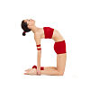

{kind=link}

{kind=link}

{kind=link}
{kind=link}
{kind=link}


{kind=link}
.JPG)


{kind=link}
{kind=link}

{kind=link}

{kind=link}

{kind=link}
{kind=link}

{kind=link}


.jpg){kind=link}
{kind=link}
{kind=link}
{kind=link}


{kind=link}
{kind=link}


{kind=link}
{kind=link}
{kind=link}
{kind=link}

{kind=link}

{kind=link}
Shavasana
Sarvasana
Mrtasana
{kind=link}
{kind=link}
{kind=link}
{kind=link}


{kind=link}

{kind=link}


{kind=link}
{kind=link}
{kind=link}


{kind=link}

| English | Meaning |
|---|---|
| Adho | downward |
| Ardha | half |
| Eka | one |
| single | |
| Bandha | lock |
| Dhánus | bow |
| Dwī | two |
| Parivṛtta | revolved |
| twisted | |
| Supta | supine |
| reclining | |
| Tulā | balance |
| Upaviṣṭha | seated |
| Ubhaya | both, together |
| Ūrdhva | upward |
| Utthita | extended |
| Sanskrit transliteration | Sanskrit | English | Image | Classification |
|---|---|---|---|---|
| Adho Mukha Śvānāsana | अधोमुखश्वानासन | Downward-Facing Dog Pose | Arm Balance and Forward Bend. | |
| Adho Mukha Vṛkṣāsana | अधोमुखवृक्षासन | Downward-Facing Tree (Full Arm Balance) | |
Arm Balance |
| Ākarṇa Dhanurāsana | आकर्णधनुरासन | Bow posture up to ear | Forward Bend (Paschima Pratana Sthiti) | |
| Anantāsana | अनन्तासन | Ananta's pose | Supine Leg stretch | |
| Anjaneyasana | अञ्जनेयासन | Honorable Pose, Crescent Moon, Crescent Lunge | Standing asana (Hip opener) | |
| Ardha Candrāsana | अर्धचन्द्रासन | Half moon | |
Standing asana (Uttihista Sthiti) |
| Ardha Matsyendrāsana | अर्धमत्स्येन्द्रासन | Half lord of the fishes pose | Twisting (Parivrrta Sthiti) | |
| Ardha Navāsana | अर्धनावासन | Half boat posture | Abdominal asana (Udara Akunchana Sthiti) | |
| Aṣṭāvakrāsana | अष्टावक्रासन | Aṣṭāvakra's pose | Arm SECe | |
| Baddha Koṇāsana | बद्धकोणासन | Bound angle | |
Sitting asana/Forward Bend (Upavista Sthiti/Paschima Pratana Sthiti) |
| Bakāsana | बकासन | Crane | |
Arm Balance |
| Bālāsana | बालासन | Child's Pose | Kneeling forward bend | |
| Bharadvājāsana | भरद्वाजासन | Bharadvaja's twist | |
Twisting (Parivrrta Sthiti) |
| Bhekāsana | भेकासन | Frog | |
Backbend (Extension) (Purva Pratana Sthiti) |
| Bhujaṅgāsana | भुजङ्गासन | Cobra | |
Backbend (Purva Pratana Sthiti) |
| Bhujapīḍāsana | भुजपीडासन | Arm-pressing posture | |
Arm balance |
| Bidalasana | बिडालासन | Cat Pose | Kneeling | |
| Caturaṅga Daṇḍāsana | चतुरङ्गदण्डासन | Four-Limbed Staff | |
Arm Balance |
| Chakrasana | चक्रासन | Wheel | |
Backbend (Purva Pratana Sthiti) |
| Daṇḍāsana | दण्डासन | Staff pose | |
Sitting asana (Upavista Sthiti) |
| Dhanurāsana | धनुरासन | Bow | Backbend (Purva Pratana Sthiti) | |
| Dvi Pāda Sirsāsana | द्विपादशिरशासन | Both feet behind head (lit: two-footed head pose) | Forward Bend (Paschima Pratana Sthiti) | |
| Dvi Pāda Viparīta Daṇḍāsana | द्विपदविपरीतदण्डासन | Two-Legged Inverted Staff Pose | Backbend (Purva Pratana Sthiti) | |
| Eka Pada Koundinyāsana I | एकपादकौण्डिण्यासन | Koundinya's pose, twisted one legged arm balance | |
Arm balance |
| Eka Pada Koundinyasana II | एकपादकौण्डिण्यासन | Koundinya's pose, one legged arm balance with straight legs | Arm balance | |
| Eka Pāda Rājakapotāsana I | एकपादराजकपोतासन | One-Legged King Pigeon | |
Backbend (Purva Pratana Sthiti) |
| Ekapādaśīrṣāsana | एकपादशीर्षासन | Foot behind Head Pose | Forward Bend (Paschima Pratana Sthiti) | |
| Eka pāda śīrṣāsana | एकपादशीर्षासन | One legged supported head balance | Inverted asana (Viparita Sthiti) | |
| Garbhāsana | गर्भासन | Fetus | ||
| Garuḍāsana | गरुडासन | Eagle pose | |
Standing asana (Uttihista Sthiti) |
| Gomukhāsana | गोमुखासन | Cow faced pose | Sitting asana (Upavista Sthiti) | |
| Guptasana | गुप्तासन | |||
| Halāsana | हलासन | Plough | Inverted asana (Viparita Sthiti) | |
| Hanumanāsana | हनुमानासन | Monkey Pose | |
Leg Stretch |
| Jānuśīrṣāsana | जानुशीर्षासन | Head-to-Knee Forward Bend | Forward Bend (Paschima Pratana Sthiti) | |
| Jāṭharaparivṛttāsana | जाठरपरिवृत्तासन | Belly-revolving posture | ||
| Karṇapīḍāsana | कपोतासन | Ear-pressing | |
Inverted asana (Viparita Sthiti) |
| Krāuñcāsana | क्रौञ्चासन | Heron | ||
| Kukkuṭāsana | कुक्कुटासन | Cockerel | |
Arm Balance |
| Kūrmāsana | कूर्मासन | Tortoise | |
Forward Bend (Paschima Pratana Sthiti) |
| Lolāsana | लोलासन | Pendant | ||
| Mahāmudrā | महामुद्रा | The great seal posture | Forward Bend (Paschima Pratana Sthiti) | |
| Makarāsana | मकरासन | Crocodile | ||
| Mālāsana | मालासन | Garland[9] | ||
| Maṇḍalāsana | मण्डलासन | Circle | ||
| Mārjāryasana | मार्जार्यासन | Cat pose | ||
| Matsyāsana | मत्स्यासन | Fish | Supine backbend | |
| Matsyendrāsana | मत्स्येन्द्रासन | Lord of the Fishes | Twisting (Parivrrta Sthiti) | |
| Mayūrāsana | मयूरासन | Peacock | Arm Balance | |
| Muktahastaśīrṣāsana | मुक्तहस्तशीर्षासन | "Hands-Free" Head stand | Inverted asana (Viparita Sthiti) | |
| Muktasana | मुक्तसन | The liberated Pose | ||
| Naṭarājāsana | नटराजासन | Dancer or Lord of the Dance |  | Backbend (Purva Pratana Sthiti) |
| Nāvāsana | नावासन | Boat | |
Sitting asana |
| Nirālambasarvāṅgāsana | निरालम्बसर्वाङ्गासन | Unsupported shoulder stand | Inversion (Viparita Sthiti) | |
| Pādahastāsana | पादहस्तासन | Standing Forward Bend | |
Standing asana (Uttihista Sthiti) |
| Padma Pinyamayurasana | Peacock Feather Pose with legs in Padmasana/Elbow Balance | Arm Balance | ||
| Padmāsana | पद्मासन | Lotus | Sitting asana (Upavista Sthiti) | |
| Paripūrṇanāvāsana | परिपूर्णनावासन | Full Boat | |
Abdominal asana (Udara Akunchana Sthiti) |
| Parivṛtta Baddha Pārśvakoṇāsana | Revolved Bound Side Angle | |
Asymmetrical standing twist with hand lock | |
| Parivrtta Pārśvakonasana | परिवृत्तपार्श्वकोणासन | Revolved Side Angle | |
Twisting (Parivrrta Sthiti) |
| Parivṛttatrikoṇāsana | परिवृत्तत्रिकोणासन | Revolved Triangle | Twisting (Parivrrta Sthiti) | |
| Parsvottanāsana | Intense stretch to the side | |
Standing asana (Uttihista Sthiti) | |
| Paryaṅkāsana | पर्यङ्कासन | Couch Pose | Sitting asana (Upavista Sthiti) | |
| Pāśāsana | पाशासन | Noose | Twisting (Parivrrta Sthiti) | |
| Paścimottānāsana | पश्चिमोत्तानासन | Extension of the posterior (western) part of the body | Forward Bend (Paschima Prattana Sthiti) | |
| Pincha Mayurasana | Feathered Peacock Pose, forearm balance | Arm Balance | ||
| Prasāritapādottānāsana | प्रसारितपादोत्तानासन | Wide Stance Forward Bend | Standing asana (Uttihista Sthiti) | |
| Rajakapotāsana | कपोतासन | King Pigeon | Backbend (Purva Pratana Sthiti) | |
| Śalabhāsana | शलभासन | Locust | Backbend (Purva Pratana Sthiti) | |
| Salamba Sarvāṅgāsana I | सर्वाङ्गासन | Shoulder Stand | |
Inversion (Viparita Sthiti) |
| Salamba Śīrṣāsana I | शीर्षासन | Supported Headstand | Inversion (Viparita Sthiti) | |
| Samakoṇāsana | समकोणासन | Straight angle | ||
| Samasthitiḥ | समस्थितिः | Equal Standing | |
Standing asana (Uttihista Sthiti) |
| Śaśakāsana | शशकासन | Rabbit | ||
| Śavāsana Shavasana Sarvasana Mrtasana |
शवासन | Corpse Pose |  | Resting asana (Visranta Karaka Asana) |
| Setubandhāsana | सेतुबन्धासन | Bridge Pose | Backbend (Purva Pratana Sthiti) | |
| Setubandhasarvāṅgāsana | सेतुबन्धसर्वाङ्गासन | Shoulder supported Bridge | Backbend (Purva Pratana Sthiti) | |
| Siddhāsana | सिद्धासन | Siddhi's Pose |  | Sitting asana (Upavista Sthiti) |
| Siṁhāsana | सिंहासन | Lion | ||
| Sukhāsana | सुखासन | Auspicious (Easy) Pose | Sitting asana (Upavista Sthiti) | |
| Suptabaddhakoṇāsana | सुप्तभद्धकोणासन | Reclining Bound Angle | Resting asana (Visranta Karaka Asana) | |
| Suptakoṇāsana | सुप्तकोणासन | Angle | Inversion (Viparita Sthiti) | |
| Supta Padangustasana I | Catching the big toe supine pose | |
Supine Leg stretch | |
| Suptavajrāsana | सुप्तवज्रासन | Thunderbolt | ||
| Suptavīrāsana | सुप्तवीरासन | Reclining Hero | |
Resting asana (Visrana Karaka Asana) |
| Svastikāsana | स्वस्तिकासन | Cross Pose | Sitting asana (Upavista Sthiti) | |
| Tāḍāsana | ताडासन | Mountain Pose | |
Standing asana (Uttihista Sthiti) |
| Tiṭṭibhāsana | टिट्टिभासन | Insect Pose | Arm balance | |
| Trikoṇāsana | त्रिकोणासन | Triangle | |
Standing asana (Uttihista Sthiti) |
| Tulāsana | तुलासन | Balance posture | |
Arm Balance |
| Uḍḍīyānabandha | उड्डीयानबन्ध | The abdominal lock | ||
| Upavesāsana | Squatting Pose | Squatting asana | ||
| Upaviṣṭakoṇāsana | उपविष्टकोणासन | Open Angle | Forward Bend (Paschima Pratana Sthiti) | |
| Urdhva Dhanurasana | ऊर्ध्वधनुरासन | Upwards-facing bow | |
Backbend (Purva Pratana Sthiti) |
| Ūrdhvamukhaśvānāsana | ऊर्ध्वमुखश्वानासन | Upward-Facing Dog | |
Backbend (Purva Pratana Sthiti) |
| Uṣṭrāsana | उष्ट्रासन | Camel |  | Backbend (Purva Pratana Sthiti) |
| Utkaṭāsana | उत्कटासन | Awkward Pose/Powerful pose | |
Standing asana (Uttihista Sthiti) |
| Uttanakūrmāsana | उत्तानकूर्मासन | Inverted Tortoise | ||
| Uttānāsana | उत्तानासन | Standing Forward Bend | |
Standing asana (Uttihista Sthiti) |
| Utthitahastapādāṅguṣṭhāsana | उत्थितहस्तपादाङ्गुष्ठासन | Standing Big Toe Hold | |
Standing asana (Uttihista Sthiti) |
| Utthitapārśvakoṇāsana | उत्थितपार्श्वकोणासन | Extended Side Angle | Standing asana (Uttihista Sthiti) | |
| Uttihita Pārśvakonasana | Extended Side Angle Pose | Standing asana (Uttihista Sthiti) | ||
| Vajrāsana | वज्रासन | Thunderbolt | Sitting asana (Upavista Sthiti) | |
| Vasiṣṭhāsana | वसिष्ठासन | Vasista's pose/Vasista is the name of a sage | Arm Balance (Side Plank Pose) | |
| Vātāyanāsana | वातायनासन | Horse | Standing asana (Uttihista Sthiti) | |
| Viparītakaraṇi | विपरीतकरणि | Legs-up-the-Wall | |
Inverted asana (Viparita Sthiti) |
| Vīrabhadrāsana I | वीरभद्रासन | Warrior I | |
Standing asana (Uttihista Sthiti) |
| Vīrabhadrāsana II | वीरभद्रासन II | Warrior II | |
Standing asana (Uttihista Sthiti) |
| Vīrabhadrāsana III | वीरभद्रासन III | Warrior III | |
Standing asana (Uttihista Sthiti) |
| Vīrāsana | वीरासन | Hero | Sitting asana (Upavista Sthiti) | |
| Vṛkṣāsana | वृक्षासन | Tree | |
Standing asana (Uttihista Sthiti) |
| Vṛścikāsana | वृश्चिकासन | scorpion | Backbend (Purva Pratana Sthiti) |